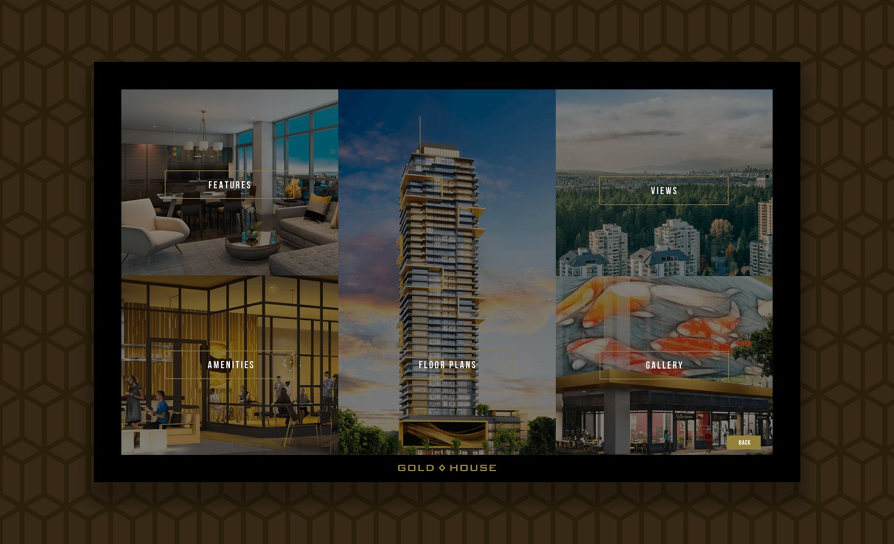
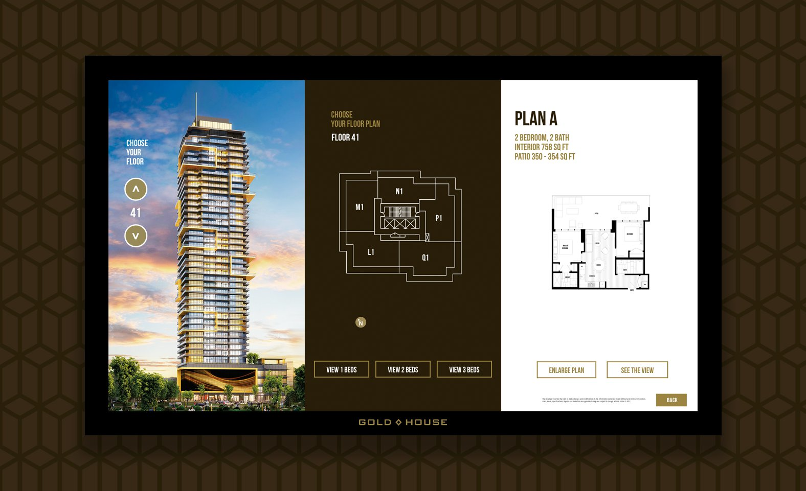
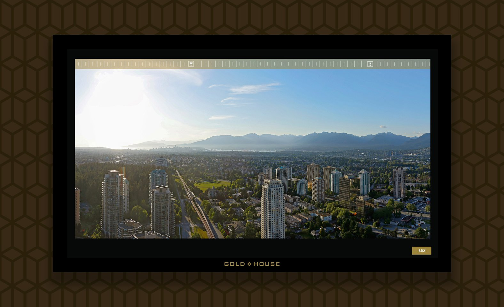
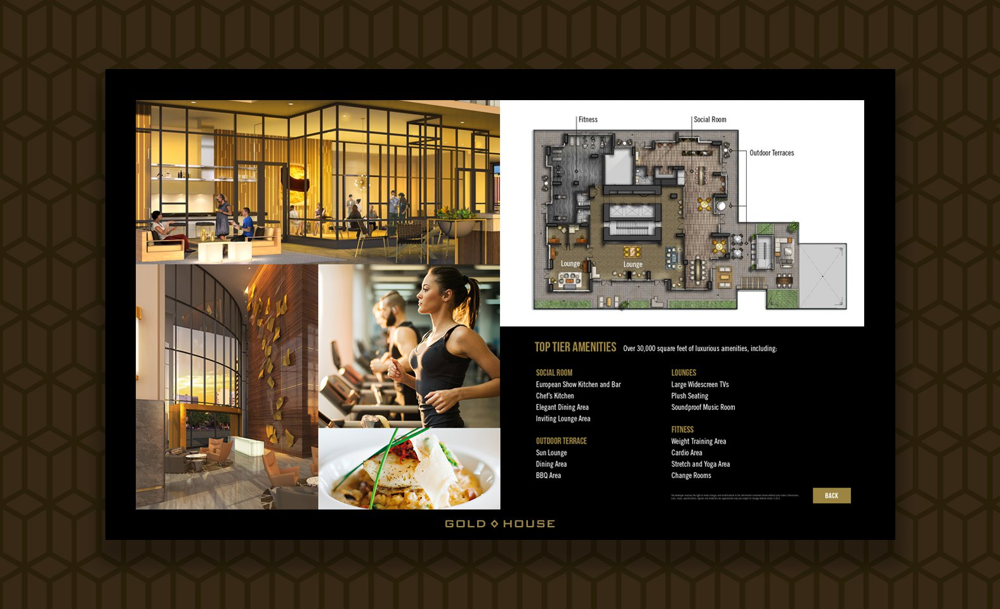

Goldhouse Touchscreen
A highly engaging interactive touchscreen for a real estate development sales centre.
The Goldhouse development in Metrotown designed by Chris Dikeakos Architects Inc. features two residential towers with luxurious interiors and top-tier amenities.
tryl.es teamed up with Utility to implement touchscreen kiosks for the dedicated sales centre. These interactive presentations highlight the features of the development and provide information on available units.
Floorplates and plans are organized and viewable by floor
And link to a panorama viewer to show potential buyers what view they can expect in each unit.
Amenities are explored through the touch-swipe image gallery that selectively expands into a large-view format.
Conclusion
An excellent way to provide potential home buyers with the information they need to make their purchase decision, the interactive touchscreen is an opportunity to integrate both online and print materials with the real built-environment — to offer an overall experience of the development.